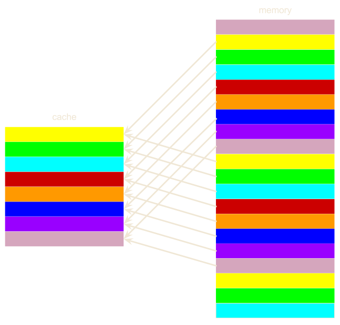
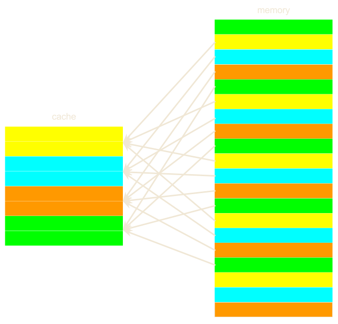

Pragmatic optimization
In modern programming
What every optimizer should know about caches?
Created by Marina (geek) Kolpakova for UNN / 2015-2016
Course Topics
- Pragmatics
- Ordering optimization approaches
- Demystifying a compiler
- Mastering compiler optimizations
- Computer Architectures
- Modern computer architecture concepts
- What every optimizer should know about caches?
- Instruction scheduling
Outline
- summary
The memory-processor gap
Processor advances much faster than memory.DRAM/SRAM
- Dynamic random-access memory (DRAM) is used to implement main memory because it is
- cheap to manufacture
- easy to build large
Static random-access memory (SRAM) cannot be used to implement main memory because it is
- much more expensive to manufacture
- hard to build capacious because it requires more transistors per cell,
- but it is much faster
Locality principals
- Temporal locality
- relies on the fact that recently accessed items are likely
to be accessed in the nearest future. If address
M(n)is accessed at timet, it is likely thatM(n)will be used again at timet+ε , where ε is small. - Spatial locality
- relies on the fact that items whose addresses are near each other likely to accessed close
together in time. If address
M(n)is accessed it is likely thatM(n+ε)will be used, whereεis small.
Cache hierarchy
- Cache is a small fast memory usually integrated on the chip that holds recently used data or instructions for further use.
- Accessing cache is slower than accessing registers but faster than main memory.
- Modern computers have memory of different types and properties organized in hierarchy, several levels of caches lay between processor and main memory.
- Hierarchy offers a reasonable tread off between speed, size and cost.
- Cache may offer some shrink in power consumption.
Cache hierarchy
- Modern architectures belong to Harvard class so have data and instruction cache separated.
- Cache is usually marked as
Lxfor referring to any type of it.Dx, for data cache andIxfor instruction cache. - L1 is used to call the closest to processor level of cache.
terminology
- Access time
- is the time from when a read or write is requested until it arrives at its destination.
- Cycle time
- is the minimum time between requests to memory.
terminology
- Cache hit
- is the situation when the requested data is in the cache.
- Cache miss
- is the situation when the requested data isn't in the cache. Upon a cache miss, the data is retrieved from main memory (or a higher level of cache) and placed in it.
terminology
- Cache miss rate
- is the fraction of cache accesses that result in a miss.
- Local miss rate
- is the number of misses in a cache divided by the total number of memory access to this cache
- Global miss rate
- is the number of misses in a cache divided by the total number of memory accesses generated
terminology
- Cache miss penalty
- is the time required for serving a cache miss
(It depends on the latency and bandwidth of the lower level of cache or memory). - Memory stall cycles
- is the cycles during which a CPU is stalled waiting for a memory access.
typical numbers for modern ARM
- main memory is 3 GB
- L2 cache is 2MB (1:1536)
- L1 cache is 32KB per core or 128KB in total (1:24576)
Inclusive / Exclusive
- Modern processors have from 1 to 4 levels of caches
- Inclusive caches duplicates the data from higher level cache in lower levels
- Exclusive caches contains data only in one level of cache
- Most caches are inclusive which simplifies coherency handling.
Cache line
- Data transfer unit between registers and L1 cache is usually in between 1-16 bytes
- Cache line is the smallest transfer unit between main memory(or higher level cache) and cache (typically 32, 64 bytes, sometimes 128 bytes and more). Cache line is also unit of storage allocation in cache
- Whole cache is split into sets equal in size.
- Each line has a tag that indicates the address in memory from which the line has been copied.
Associativity
- Cache associativity is the number of unique places in a cache where any given memory item can reside.
- Cache hit is detected through an associative search of all the tags.
Consequently, there is a cache size/hit latency tread off, large caches can keep mere data, but need more time for tag search.
Associativity
- In an N-way set associative cache, any cache line from memory can map to any of the N locations in a set. 4-/8- or 16-way associative caches are often used in modern chips.
- 1 way set associative cache is called direct mapped. Direct mapped means only one location, and so high probability of conflict, but tag search is very fast.
- A fully associative cache is one in which a cache line can be placed anywhere in cache. Full association is feasible for very small size caches only (TLB's).
Higher associativity gives faster caches, but costly in terms of gates and complexity (power and performance).
Capacity
Direct Mapped
Set-associative
Fully-associative
Cache misses taxonomy
- Compulsory miss refers to a miss for the very first access for a cache line, which is unavoidable for any program.
- Capacity miss is the situation than the cache cannot contain all the cache lines needed during execution of a program. This type is inevitable for any production program.
- Conflict miss occurs when a block is to be discarded and later retrieved because too many cache lines mapped to the same set. It is only applicable to a (less than fully) set associative caches. Conflict misses may in the worst case lead to a cache trashing where a cache line is repeatedly brought in, and then immediately thrown out because of a conflict miss
- Coherency miss occurs when a block must be reloaded from the memory or lower level of cache to keep data coherent between multiple processors in SMP system.
Replacement policy
Replacement policy defines which cache line is to be replaced under a miss.
- Random evicts cache lines without any preference or specific order
- Round robin (RR) evicts cache lines in the FIFO order
- Least Recently Used (LRU) evicts cache line which was not in use for the longest time. It performs better than random or RR but is more difficult to implement
- Pseudo-LRU evicts one of the least recently used. close to LRU in term of cache efficiency, but much faster to operate.
- Belady evicts block that will be used the furthest in future. Unreachable optimum.
Write strategy
Write Strategy is a strategy to maintain coherence between caches in a hierarchy and the main memory while write occur.
Data is in the cache (write hit)
- Write through
- The data is written through all cache hierarchy up to main memory. Memory and cache are always in coherent state. Uniform latency on misses, but extra bus traffic.
- Write back
- The data is written only to the cache line in the cache. The modified cache line
is written to memory only when necessary (it need to be replaced by another one). Memory and caches can be
in not coherent state. Non-uniform miss latency
- Clean miss results in one transaction with lower level (fill)
- Dirty miss results in two transactions with lower level (writeback & fill)
Allocation policy
Allocation policy is a policy of a new cache allocation
if the write miss occurs.
Data is not in the cache (write miss)
- Write-allocate (is to be used with write back)
- Allocate a line in a cache to store by retrieving the data from lower level of cache and update the value. It requires additional bandwidth, but may decrease miss rate for reads.
- Write-non-allocate (is to be used with write through)
- By pass the cache and store the data directly to the memory or lower level of cache. No extra bandwidth is added, but might result in miss rate increase.
Write buffer
Write buffer is a buffer between the current level of cache and the next level of cache or memory
- Store latency is not uniform ( e.g. if a cache line must be read or allocated)
- Buffering writes is used to avoid stalling the CPU. Especially helpful for write-back
- Write buffer (store buffer/write-behind buffer) is a FIFO queue of incomplete stores
- intermediate values can be forwarded for use upon request
Hardware cache optimizations
Basic:
- Larger block size to reduce miss rate
- Bigger caches to reduce miss rate
- Higher associativity to reduce miss rate
- Multilevel caches to reduce miss penalty
- Giving priority to read misses over writes to reduce miss penalty
- Avoiding address translation during indexing of the cache to reduce hit time
- Victim buffer to reduce conflict misses
Hardware cache optimizations
Advanced:
- Small and Simple First-Level Caches to Reduce Hit Time and Power
- Way Prediction to Reduce Hit Time
- Pipelined Cache Access to Increase Cache Bandwidth
- Nonblocking Caches to Increase Cache Bandwidth
- Multi-banked Caches to Increase Cache Bandwidth
- Critical Word First and Early Restart to Reduce Miss Penalty
- Merging Write Buffer to Reduce Miss Penalty
- Hardware Prefetching of Instructions and Data to Reduce Miss Penalty or Miss Rate
Nonblocking Caches
Nonblocking cache (or Lockup Free) is a cache design for which cache continues to supply cache hits during a miss, called hit under miss, or hit under multiple miss.
- Especially useful for out-or-order pipeline
- Out-or-oder with coup of nonblocking cache is generally capable of hiding the miss penalty of an L1 data cache miss that hits in the L2 cache, but is not capable of hiding a significant portion of the L2 miss penalty.
- Hit under miss significantly increases the complexity of the cache controller with the complexity increasing as the number of outstanding misses allowed increases.
Victim buffer
Victim buffer (or Victim cache) is a very small fully-associative cache (≈4 entries) used to store evicted cache lines before complete kick out. If the cache line in a victim buffer is requested it is placed in cache again.
- In fact it is 4 extra ways, shared among all sets
- VB is very useful to deal with conflict misses
- VB helps then associativity is not enough
Data prefetching
- Hardware
- Compiler
- Software
- out-or-order
Hardware prefetching
Hardware prefetching is the mechanism implemented in cache HW that puts memory blocks promising to be accessed in the nearest future speculatively in cache.
- Hardware is able to recognize different access pattern
- Prefetcher keeps on track multiple read and write streams
- The simplest pattern is streaming kernel.
- The compromise should be found
- Do not evict useful data
- Properly select prefetching distance
Atomicity
- Load lock / Store conditional
Pragmatics: caches
- Don't access for write into the same cache lines from different processes
→ avoid coherency conflicts - Ensure data locality, use proper data structures and algorithms
→ avoid contention conflicts - Fetch from many different streams carefully
→ avoid associativity conflicts - Tile for the largest non-shared cache. Never block for the shared cache size
→ avoid contention conflicts
Depending on the speed difference and amount of work per iteration, L1 may be better. - Use software prefetching (
PLD)
→ reduce cold cash misses
Prefetching suits contiguous memory accesses patterns, but not random
Obtaining cache properties ARM
Optimize for caches
- Strip mining & tiling
- Stride minimization
Permutations for address
Skewed caches. mirco-benchmark resultOptimization for caches
- Keep inventory of the program small (use less data)
- See the first rule
Summary
- verity is in the details!
- The second software-hardware gap. Use the patterns which was considered by HW designers
THE END